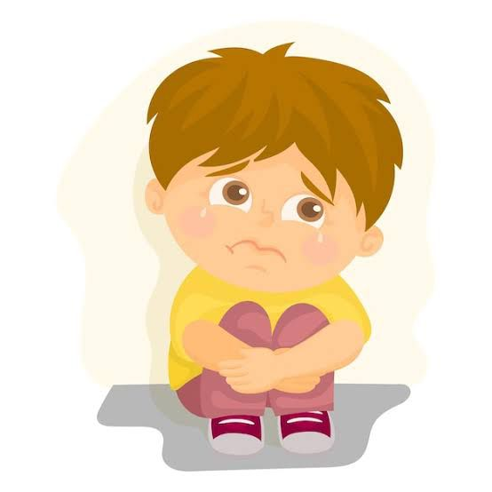

El TDAH puede afectar negativamente las relaciones sociales y emocionales de los niños. Las dificultades en el control de impulsos y la regulación emocional pueden llevar a:
Los niños con TDAH pueden experimentar dificultades para formar y mantener amistades debido a su comportamiento impulsivo y la falta de habilidades sociales.
La dificultad para cumplir con las expectativas académicas y sociales puede contribuir a una autoestima negativa y sentimientos de frustración.
Programas que enseñan a los niños habilidades para interactuar de manera efectiva con sus compañeros
Terapias que ayudan a los niños a desarrollar una mejor autoestima y a manejar el estrés relacionado con el TDAH.